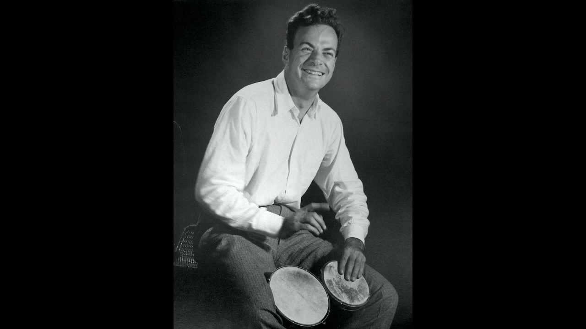
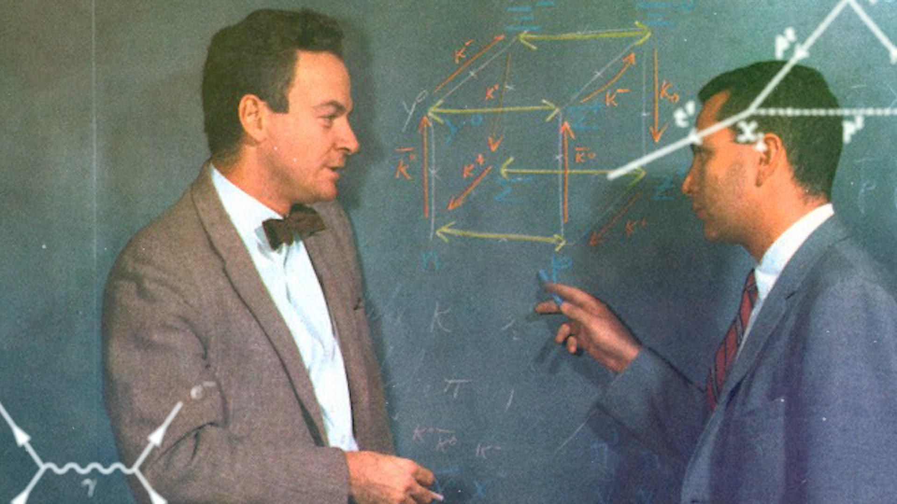

Surely you are joking Mr. Feynman!

Feynman's Los Alamos ID badge in 1941, with World War II raging in Europe but the United States not yet at war, Feynman spent the summer working on ballistics problems at the Frankford Arsenal in Pennsylvania. After the attack on Pearl Harbor had brought the United States into the war, Feynman was recruited by Robert R. Wilson, who was working on means to produce enriched uranium for use in an atomic bomb, as part of what would become the Manhattan Project.[46][47] Wilson's team at Princeton was working on a device called an isotron, intended to electromagnetically separate uranium-235 from uranium-238. This was done in a quite different manner from that used by the calutron that was under development by a team under Wilson's former mentor, Ernest O. Lawrence, at the Radiation Laboratory of the University of California. On paper, the isotron was many times more efficient than the calutron, but Feynman and Paul Olum struggled to determine whether or not it was practical. Ultimately, on Lawrence's recommendation, the isotron project was abandoned.
At this juncture, in early 1943, Robert Oppenheimer was establishing the Los Alamos Laboratory, a secret laboratory on a mesa in New Mexico where atomic bombs would be designed and built. An offer was made to the Princeton team to be redeployed there. "Like a bunch of professional soldiers," Wilson later recalled, "we signed up, en masse, to go to Los Alamos."[49] Like many other young physicists, Feynman soon fell under the spell of the charismatic Oppenheimer, who telephoned Feynman long distance from Chicago to inform him that he had found a sanatorium in Albuquerque, New Mexico, for Arline. They were among the first to depart for New Mexico, leaving on a train on March 28, 1943. The railroad supplied Arline with a wheelchair, and Feynman paid extra for a private room for her.

At this juncture, in early 1943, Robert Oppenheimer was establishing the Los Alamos Laboratory, a secret laboratory on a mesa in New Mexico where atomic bombs would be designed and built. An offer was made to the Princeton team to be redeployed there. "Like a bunch of professional soldiers," Wilson later recalled, "we signed up, en masse, to go to Los Alamos.
"Like many other young physicists, Feynman soon fell under the spell of the charismatic Oppenheimer, who telephoned Feynman long distance from Chicago to inform him that he had found a sanatorium in Albuquerque, New Mexico, for Arline. They were among the first to depart for New Mexico, leaving on a train on March 28, 1943. The railroad supplied Arline with a wheelchair, and Feynman paid extra for a private room for her.